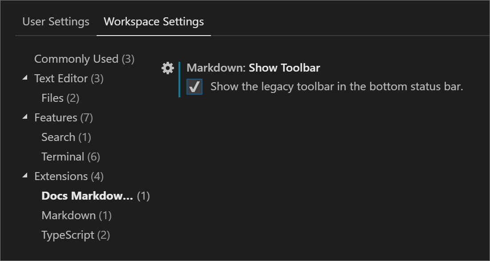

Docs Authoring Pack for VS Code
The Docs Authoring Pack is a collection of VS Code extensions to aid with Markdown authoring for docs.microsoft.com. The pack is available in the VS Code Marketplace and contains the following extensions:
- Docs Markdown: Provides Markdown authoring assistance for docs.microsoft.com (Docs) content, including basic Markdown support and support for custom Markdown syntax in Docs, such as alerts, code snippets, and non-localizable text. Now also includes some basic YAML authoring assistance, such as inserting TOC entries.
- markdownlint: A popular Markdown linter by David Anson to help make sure your Markdown is valid.
- Code Spell Checker: A fully offline spell checker by Street Side Software.
- Docs Preview: Uses the docs.microsoft.com CSS for more accurate Markdown preview, including custom Markdown.
- Docs Article Templates: Allows users to scaffold Learn modules and apply Markdown skeleton content to new files.
- Docs YAML: Provides Docs YAML schema validation and auto-complete.
- Docs Images: Provides image compression and resizing for folders and individual files to help authors of docs.microsoft.com.
Prerequisites and assumptions
To insert relative links, images, and other embedded content with the Docs Markdown extension, you must have your VS Code workspace scoped to the root of your cloned Open Publishing System (OPS) repo. For example, if you have cloned the docs repository to C:\git\SomeDocsRepo\, then open that folder or a subfolder in VS Code: File > Open Folder menu, or code C:\git\SomeDocsRepo\ from the command line.
Some syntax supported by the extension, such as alerts and snippets, are custom Markdown for OPS. Custom Markdown will not render correctly unless published via OPS.
How to use the Docs Markdown extension
To access the Docs Markdown menu, type ALT+M. You can click or use the up and down arrows to select the command you want. Or you can type to start filtering, then hit ENTER when the function you want is highlighted in the menu.
See the Docs Markdown readme for an up-to-date list of commands.
How to generate a master redirect file
The Docs Markdown extension includes a script to generate or update a master redirection file for a repo, based on the redirect_url metadata in individual files. This script checks every Markdown file in the repo for redirect_url, adds the redirection metadata to the master redirection file (.openpublishing.redirection.json) for the repo, and moves the redirected files to a folder outside the repo. To run the script:
- Select F1 to open the VS Code command palette.
- Start typing "Docs: Generate..."
- Select the command
Docs: Generate master redirection file. - When the script finishes running, the redirection results will show in the VS Code output pane, and the removed Markdown files will be added to the Docs Authoring\redirects folder under your default path.
- Review the results. If they are as expected, submit a pull request to update the repo.
How to assign keyboard shortcuts
Type CTRL+K then Ctrl+S to open the Keyboard Shortcuts list.
Search for the command, such as
formatBold, for which you want to create a custom key binding.Click the plus that appears near the command name when you mouse over the line.
After a new input box is visible, type the keyboard shortcut you want to bind to that particular command. For example, to use the common shortcut for bold, type Ctrl+B.
It's a good idea to insert a
whenclause into your key binding, so it won't be available in files other than Markdown. To do this, open keybindings.json and insert the following line below the command name (be sure to add a comma between lines):"when": "editorTextFocus && editorLangId == 'markdown'"Your completed custom key binding should look like this in keybindings.json:
[ { "key": "ctrl+b", "command": "formatBold", "when": "editorTextFocus && editorLangId == 'markdown'" } ]Tip
Place your key bindings in this file to overwrite the defaults
Save keybindings.json.
For more information on key bindings, see the VS Code docs.
How to show the legacy "Gauntlet" toolbar
Former users of the extension code-named "Gauntlet" will notice that the authoring toolbar no longer appears at the bottom of the VS Code window when the Docs Markdown Extension is installed. This is because the toolbar took up a large space on the VS Code status bar and did not follow best practices for extension UX, so it is deprecated in the new extension. However, you can optionally show the toolbar by updating your VS Code settings.json file as follows:
In VS Code, go to File > Preferences > Settings or select Ctrl+,.
Select User Settings to change the settings for all VS Code workspaces or Workspace Settings to change them for just the current workspace.
Select Extensions > Docs Markdown Extension Configuration, and then select Show the legacy toolbar in the bottom status bar.

Once you've made your selection, VS Code updates the settings.json file. You will then be prompted to reload the window for the changes to take effect.
Newer commands added to the extension will not be available from the toolbar.
How to use Docs templates
The Docs Article Templates extension lets writers in VS Code pull a Markdown template from a centralized store and apply it to a file. Templates can help ensure that required metadata is included in articles, that content standards are followed, and so on. Templates are managed as Markdown files in a public GitHub repository.
To apply a template in VS Code
- Ensure the Docs Article Templates extension is installed and enabled.
- If you don't have the Docs Markdown extension installed, click F1 to open the command palette, start typing "template" to filter, then click
Docs: Template. If you do have Docs Markdown installed, you can use either the command palette or click Alt+M to bring up the Docs Markdown QuickPick menu, then selectTemplatefrom the list. - Select the desired template from the list that appears.
To add your GitHub ID and/or Microsoft alias to your VS Code settings
The Templates extension supports three dynamic metadata fields: author, ms.author, and ms.date. That means that if a template creator uses these fields in the metadata header of a Markdown template, they will be auto-populated in your file when you apply the template, as follows:
| Metadata field | Value |
|---|---|
author |
Your GitHub alias, if specified in your VS Code settings file. |
ms.author |
Your Microsoft alias, if specified in your VS Code settings file. If you are not a Microsoft employee, leave unspecified. |
ms.date |
The current date in the Docs-supported format, MM/DD/YYYY. The date is not automatically updated if you subsequently update the file - you must update it manually. This field is used to indicate the "article freshness". |
To set author and/or ms.author
- In VS Code, go to File > Preferences > Settings or select Ctrl+,.
- Select User settings to change the settings for all VS Code workspaces, or Workspace settings to change them for just the current workspace.
- In the Default Settings pane on the left, find Docs Article Templates Extension Configuration, click the pencil icon next to the desired setting, then click Replace in Settings.
- The User settings pane will open side by side, with a new entry at the bottom.
- Add your GitHub ID or Microsoft email alias, as appropriate, and save the file.
- You might need to close and restart VS Code for the changes to take effect.
- Now, when you apply a template that uses dynamic fields, your GitHub ID and/or Microsoft alias will be auto-populated in the metadata header.
To make a new template available in VS Code
- Draft your template as a Markdown file.
- Submit a pull request to the templates folder of the MicrosoftDocs/content-templates repo.
The docs.microsoft.com team will review your template and merge the PR if it meets docs.microsoft.com style guidelines. Once merged, the template will be available to all users of the Docs Article Templates extension.
Demo several features
Here's a short video that demonstrates the following features of the Docs Authoring Pack:
- YAML files
- Support for "Docs: Link to file in repo"
- Markdown files
- Update "ms.date" Metadata Value context menu option
- Code auto-completion support for code-fence language identifiers
- Unrecognized code-fence language identifier warnings / auto correction support
- Sort selection ascending (A to Z)
- Sort selection descending (Z to A)
Contribution expectations
The Docs Authoring Pack extension is open source and available for contributions to anyone with a GitHub account. There is a dedicated internal Microsoft team that actively works on this project. This team monitors issues and pull requests. The service level agreement (SLA) and expectation of getting a pull request reviewed is currently one week. The team is undergoing automation efforts to improve this turn around time.
Next steps
Explore the various features available in the Docs Authoring Pack, Visual Studio Code extension.